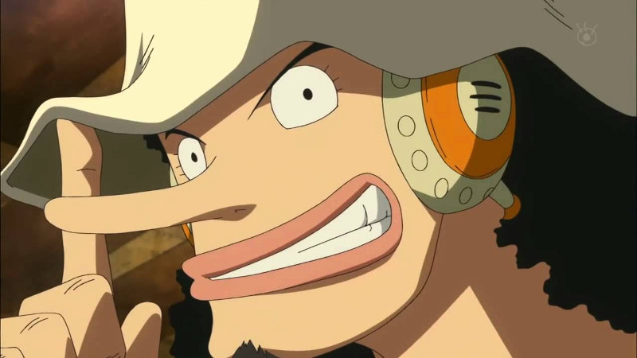
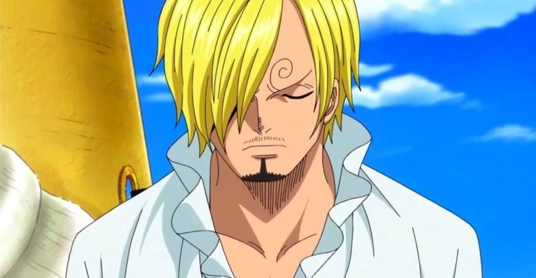
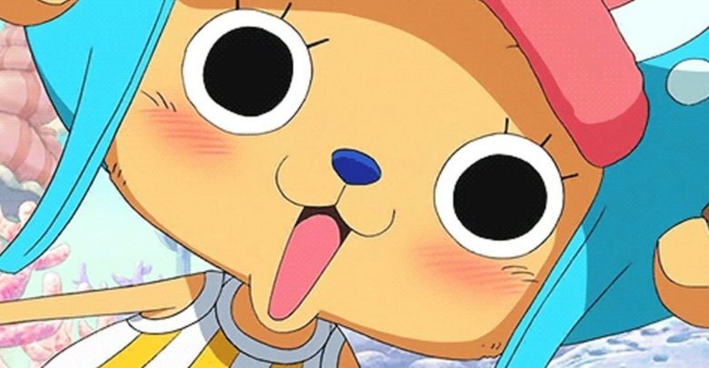
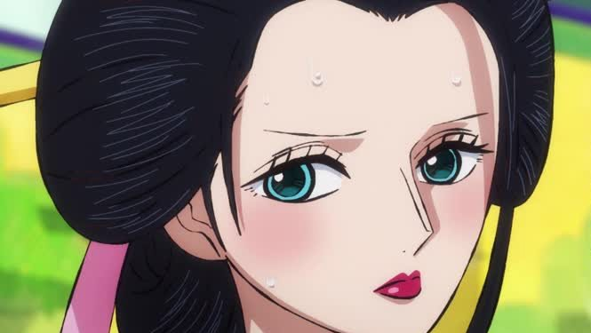
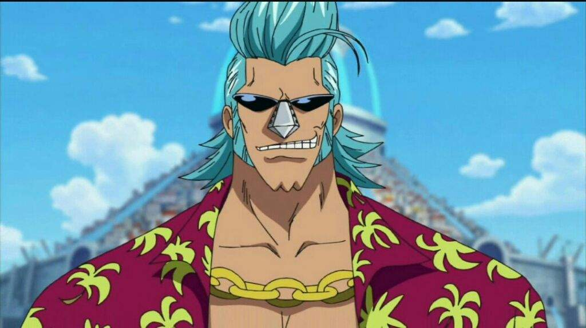
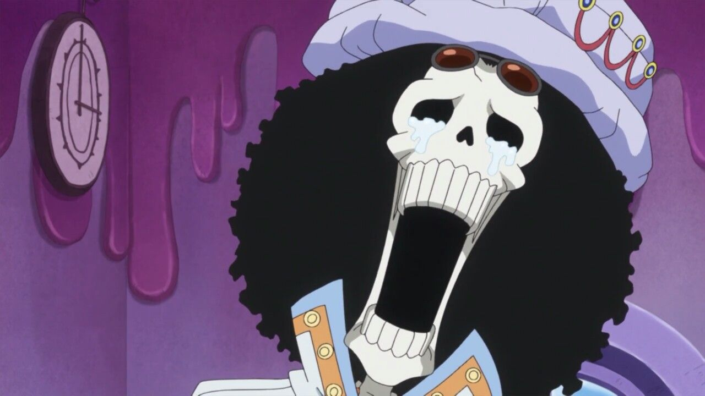
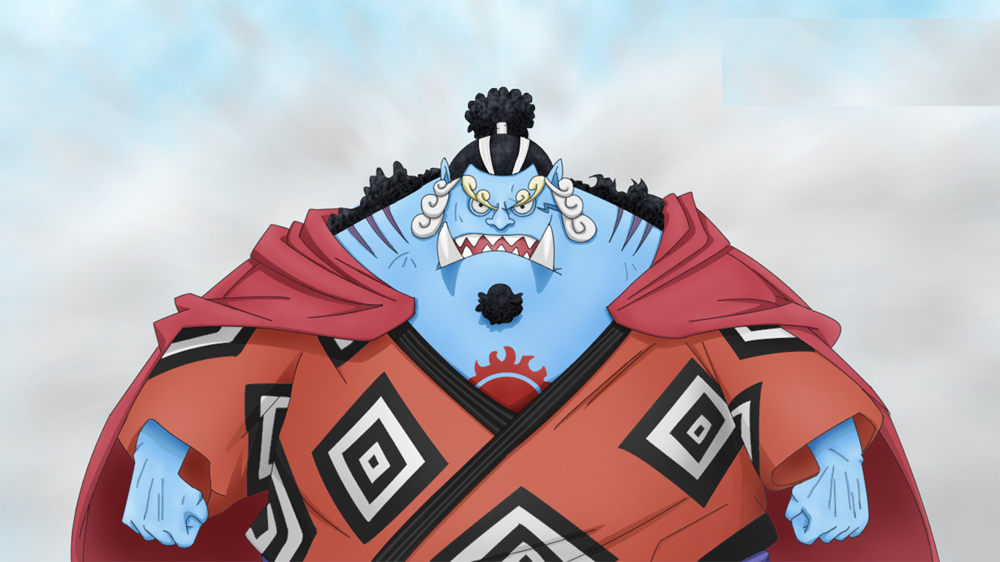

One Piece es una aventura de piratas. Es la historia de un chico llamado Monkey D. Luffy (Luffy Monkey D. en espanol, dada la onomastica japonesa de poner antes el apellido que el nombre) quien, cuando tenia 7 anos, comio accidentalmente una Fruta del Diablo, convirtiendose en un hombre de goma aunque al precio de hacerle incapaz de nadar.
Luffy, inspirado por el pirata Shanks "Akagami", sale al mar diez anos despues para convertirse en el Rey de los Piratas. Para ello necesitaria encontrar una tripulacion adecuada, diez personas que lo acompanarian en su aventura. Dicho titulo honorifico naceria con la leyenda del pirata Gol D. Roger, conocido junto a su tripulacion como los unicos capaces de la hazana de recorrer por completo la Grand Line 22 anos antes del inicio del viaje de Luffy.

Es el capitan de los Piratas del Sombrero de Paja. A los 7 anos se comio la Gomu Gomu no Mi, una de las 12 Frutas del Diablo que le permitio estar hecho de goma (Es un misterio el que Shanks tuviera esta fruta, ya que era uno de los subordinados de Gold D. Roger, mas, se piensa que este al morir, su fruta fue entregada a Shanks, al igual que su sombrero). Su sueno es encontrar el One Piece que es el mas grande anelo pirata y ser el futuro Rey de estos. Hasta ahora se le conoce como "El Quinto Emperador (Yonkou)", por sus acciones en Whole Cake,por su huida de esta isla y el bochorno que le hizo pasar a Big Mom en esta. Tiene 17 anos (antes del TimeSkip) y junto con sus amigos se embarca en una gran aventura hacia los lugares mas peligrosos e insolitos de la tierra.

Es el espadachin principal y el primer oficial (segundo al mando) de los Piratas del Sombrero de Paja. Fue el primero que se unio a Luffy, tiene 19 anos. Su sueno es convertirse en el mejor espadachin del mundo y "ser famoso, aunque tenga mala fama".

Es la navegante de los Piratas del Sombrero de Paja. Al principio viajo con Luffy simplemente como cooperacion mutua, luego se unio formalmente a la tripulacion de Luffy. Su sueno es poder hacer un mapa completo del mundo. Tiene 18 anos.

Es el artillero e inventor de la tripulacion. Es un tirador excelente y tiene 17 anos. Usopp deseo navegar con Luffy porque su sueno es convertirse en un valiente guerrero del mar, reunirse con su padre algun dia y que este orgulloso de el.
Es el cocinero de los Piratas del Sombrero de Paja. Es un experto cocinero y tiene 19 anos. Su sueno es encontrar el legendario mar All Blue (un hipotetico oceano que albergaria a los peces de los cuatro oceanos y el Grand Line). Se unio a Luffy luego de los incidentes en el Restaurante Baratie.
Es el medico de los Piratas del Sombrero de Paja. Es un reno con una nariz azul y tiene 15 anos, tiene las caracteristicas de un ser humano, porque comio la Fruta del Diablo Hito Hito no mi que le dio forma y habilidades humanas. Se une a la tripulacion para hacer honor al deseo de su padre adoptivo y porque desea expandir sus horizontes y ser un doctor capaz de curar todas las enfermedades.
Es la arqueologa y erudita de los Piratas del Sombrero de Paja. Tiene 28 anos, luego de la incursion en Alabasta, Robin pidio a Luffy unirse a su equipo, el cual acepto. Es usuaria de la Hana Hana no mi, que le permite hacer florecer varias partes de su cuerpo (brazos, piernas, etc.) en cualquier lugar. Su sueno es descubrir lo que sucedio durante el Siglo Vacio, historia que se encuentra narrada en unos monolitos llamados Poneglyphs.
Es el carpintero e ingeniero de los Piratas del Sombrero de Paja, es el creador del actual barco de la tripulacion, el Thousand Sunny y tiene 35 anos. Se une al Sombrero de Paja despues de los incidentes en Enies Lobby que le convirtieron en un criminal buscado. Su sueno es dar la vuelta al mundo con su barco.
Es el musico de los Piratas del Sombrero de Paja. Hasta ahora, el ultimo en unirse a la tripulacion y tiene 88 anos. Es un esqueleto vivo, debido a que comio la Yomi Yomi no mi, una Fruta del Diablo que le permitio volver a la vida, después de morir junto a su anterior tripulacion. Su sueno es reencontrarse con Laboon, una enorme ballena a la cual los Piratas Rumbar prometieron volver a ver despues de su viaje por el Grand Line, promesa que no pudieron cumplir.
Antiguo Shishibukai, exsubordinado de la Emperatriz Big Mom. Hace tiempo atras le prometio a Luffy que se incorporaria a su tripulacion, cuando se volvieran a ver. Y cumplio su promesa al traicionar a la Emperatriz. Ahora ocupa el cargo de timonel.
